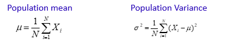
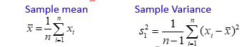
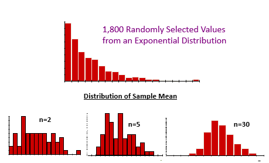

Sampling Distribution
Parameter
- Statistical measures computed using population observations.
- Let X1, X2,…, XN are population units.

Statistic
- Statistical measures computed using sample observations.
- Let x1, x2,…, xn are sample units.

Sampling Distribution Definition
- Unknown parameters are estimated using sample observations.
- Parameter values are fixed.
- Values of statistic varies sample to sample.
- Each sample has some probability of being chosen.
- Each value of a statistic is associated with a probability.
- Statistic is a random variable.
- Distribution of a statistic is called sampling distribution.
- Distribution of a statistic may not be the same as the distribution of population.
Central Limit Theorem
- When population distribution is N(μ, σ), then 𝑥 ̅~N(𝜇, 𝜎/√𝑛 )
- When the population distribution is not normal, then also 𝑥 ̅~N(𝜇, 𝜎/√𝑛 ) provided n→∞.
- Practically, this result is true for n ≥ 30.
- This result can also be written as :
𝑍=(𝑥 ̅−𝜇)/(𝜎/√𝑛)~𝑁(0,1)

Put another way, doesn't matter the type of original distribution (Normal, Uniform, Exponenetial etc) if the sample size n >= 30, then we consider that its mean will follow a normal distribution.
Sampling Proportion Distribution
- Let us consider that the population is divided into two mutually exclusive and collectively exhaustive classes.
- One class possesses a particular attribute, Other class does not posses that attribute.
- For example a people in a city could be divided into “Smokers” and “Non-smokers”.
Let there be a population of any distribution.
N = population size
X = no. of people out of N possessing a particular attribute
𝝅 = Actual proportion of the people possessing a particular attribute = X/N
Let a sample is selected from this population.
n = sample size
x = no. of people in the sample possessing a particular attribute
p = x/n = sample proportion
When the sample size n is large enough :
𝑍 = (p − 𝝅)/√(𝝅(1-𝝅)/n)~𝑁(0,1)
This is a particular case of central limit theorem.
- Practically, this result is true for n ≥ 30. Or, when n𝝅 ≥ 5 as well as n(1- 𝝅 ) ≥ 5
$$